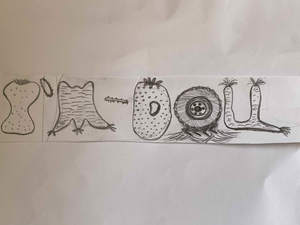

Trade Mark Journal No.2025/019 9 May 2025
UK00004188670 14 April 2025 (24,28,35,39,41,42)

- Class 24
- Textile fabrics for use in the manufacture of furniture; Textile fabric piece goods for the manufacture of upholstered furniture; Textile fabric piece goods for use in the manufacture of clothing; Textiles for furnishings; Textile piece goods for use in the manufacture of protective clothing; Textile piece goods for clothing; Furnishing fabrics being textile piece goods; Textile fabrics for the manufacture of clothing; Fabrics for the manufacture of furnishings; Fibre fabrics for the manufacture of the exterior coverings of furniture; Furniture coverings of textile; Fabrics being textile piece goods for use in manufacture; Textile piece goods for making bedding covers; Textile goods for use as bedding; Textiles for interior decorating; Textiles for digital printing; Materials (Textile -) for use in the manufacture of footwear; Textile piece goods for making-up into clothing; Loose covers made of textile materials for furniture; Textiles for making articles of clothing; Textile piece goods for use in the manufacture of shoes; Textile piece goods for making into clothing; Textile materials for use in the manufacture of blinds; Textile piece goods made of plastics materials; Textile piece goods for furnishing purposes; Fabrics being textile piece goods; Household textile piece goods; Fabrics being textile piece goods for use in embroidery; Textile piece goods for use in the manufacture of boots; Textile covers [loose] for furniture; Textile piece goods for making curtains; Printing blankets of textile material; Fibre fabrics for use in the manufacture of articles of clothing; Materials for soft furnishings; Textile piece goods for use in the manufacture of industrial filters; Textile fabrics for making into clothing; Fabric for use in the manufacture of clothing; Furniture coverings made of plastic materials.
- Class 28
- Fabric toys; Soft sculpture toys; Electronic learning toys; Construction toys; Portable games and toys incorporating telecommunication functions; Cloth toys; Soft sculpture plush toys; Plastic models being toys; Soft toys; Plastic character toys; Outdoor toys; Electronic activity toys; Miniature car models [toys or playthings]; Clothing for toy figures; Plastic toys; Electronic action toys; Toys; Play mats incorporating infant toys [playthings]; Educational toys; Smart electronic toy vehicles; Rubber character toys; Models being toys; Articles of clothing for toys; Electronic toys; Music box toys; Toy furniture; Toys, games, and playthings; Toy music boxes; Toy musical boxes [play articles]; Musical toys; Electronic educational game machines for children; Articles of clothing for dolls; Model cars [toys or playthings]; Play mats for use with toy vehicles [playthings]; Toys, games and playthings for pet animals; Imitation toilet articles being toys; Clothing for dolls; Pinball games machines [toys]; Costumes being childrens playthings; Electronic games for the teaching of children; Electronic targets for games and sports; Sketching toys.
- Class 35
- Design of advertising materials; Retail services in relation to art materials; Retail services connected with the sale of clothing and clothing accessories; Retail services in relation to clothing accessories; Production of advertising materials; Retail services in relation to fashion accessories; Retail services relating to home textiles; Mail order retail services for clothing accessories; Retail services relating to furniture; Mail order retail services connected with clothing accessories; Production of advertising material; Online retail services relating to toys; Retail services in relation to toys; Retail services in relation to downloadable virtual clothing; Online retail services for downloadable virtual clothing; Promoting the sale of fashion goods through promotional articles in magazines; Online retail services in relation to downloadable virtual clothing; Retail store services in the field of clothing; Online retail services for downloadable digital music.
- Class 39
- Packaging clothing articles for transportation.
- Class 41
- Leasing of interactive and digital compression television equipment; Services in the production of animated motion pictures and television features; Production of television entertainment features; Production of basketball games and exhibitions; Electronic games services; Digital video, audio and multimedia entertainment publishing services; Services for the production of entertainment in the form of television.
- Class 42
- Design of clothing accessories; Furniture design; Design of furniture; Design of clothing; Design services for furniture; Clothing design services; Design services for clothing; Design of furnishings; Textile design services; Design of fashion accessories; Interior design services for the retail industry; Industrial art design; Office furniture design; Design of interior decor for shops; Industrial and graphic art design; Design of industrial products; Designing of furniture; Design and development of multimedia products; Design services relating to shop interiors; Commercial art design; Interior design services for shops; Jewellery design services; Furnishing design services for the interiors of buildings; Design services relating to furnishing fabrics; Footwear design services; Design and development of consumer products; Jewelry design; Design of protective clothing; Design of products; Design of clothing, footwear and headgear; Furnishing design services; Design of jewellery; Design of carpets; Interior design services; Shop interior design; Graphic design of promotional materials; Design services relating to interior decorating for homes; Designing of clothing; Design of interior decor; Decor (Design of interior -); Graphic art design; Consultancy relating to selection of furnishing fabrics [interior design]; Interior design services for boutiques; Toy design; Design of games; Development of hardware for use in connection with electronic and interactive multimedia games; Design for others in the field of clothing; Electronic storage of entertainment media content; Furnishing design services for the interiors of ships; Electronic storage of digital music; Hosting electronic memory space on the Internet for advertising goods and services.
Daniel Jonathan Dagan